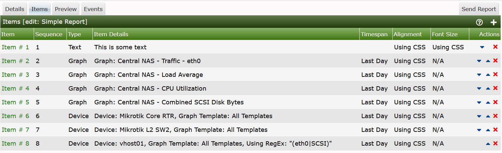
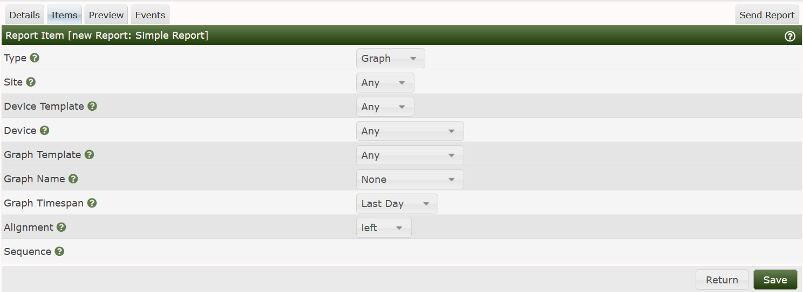
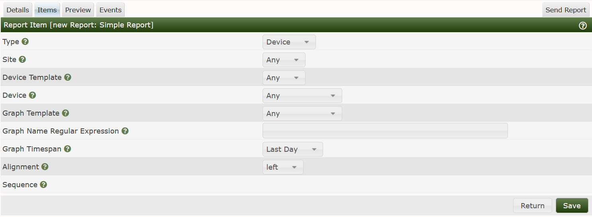
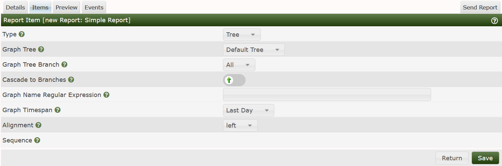

This section will describe the Report Edit Items Sub-Tab.
From this Sub-Tab, you can add, remove, and if Drag and Drop is enabled, easily reorder any Report Item. Report Items include:
Trees - Including one or more Branches, which include Devices as a Branch Type.
Graphs - One or more Graphs from a Device.
Devices - One or more Cacti Devices with Graphs whose titles may include a Regular Expression.
Text - For example to sub-section a Report and add a Title
Horizontal Rule - For separating sections of a Report.
An example Report Items interface can be seen below.

From this image, you can see a combination of Graphs, Devices, and a Device showing only Graphs that include eth0, and SCSI in their titles indicating something about Interface Graphs and Disk Utilization Graphs.
When you either add a new Item by pressing the Add button on the right, Clicking on the Item # on the left, you will be presented a page that is personalized depending on the Item Type. When you add an item for the first time, you will see the image below.

Again, the user interface will change layout depending on the Item Type that you select which happens to be the first drop-down on that page.
The columns for a Graph Type Report Item include:
The options above are only Filter to reduce the Graph list when you actually select the Graph Name, it will apply those filters to narrow in on the Graphs to display in the drop-down. All of the filters above are optional.
The last sections are for the specific Graph in question including:
When, you change the Report Item to Device the layout of the page will change and you will see the form shown below.

In this case, the Site, and Device Template both remain Filters, the Device represents the Device to include on the Report. After that, the options below define what Graphs from the Device are to be included.
The last Report Item that we will document here is the Tree type. The Text and Horizontal Rule types are pretty much self explanitory. The image below is the layout that will be shown when you change the Report Item to Tree.

In this case, there are no filter, just selections. They include:
Graph Tree - The name of the Cacti Tree to include in the report.
Graph Tree Branch - The specific Branch to include
if you are only wanting to include aportion of the Tree
Cascade to Branches - Walk all the Graph Trees branches
Graph Name Regular Expression - A MySQL/MariaDB compatible Regular
Expression of Graph Names to include in the Report.
Graph Timespan - The time range to show for the Graph.
Alignment - Should the Graph be Center, Left or Right Aligned on the page.
Sequence - The Graph Items Sequence number. This is a Read Only variable.
Copyright (c) 2004-2024 The Cacti Group